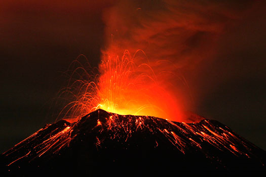
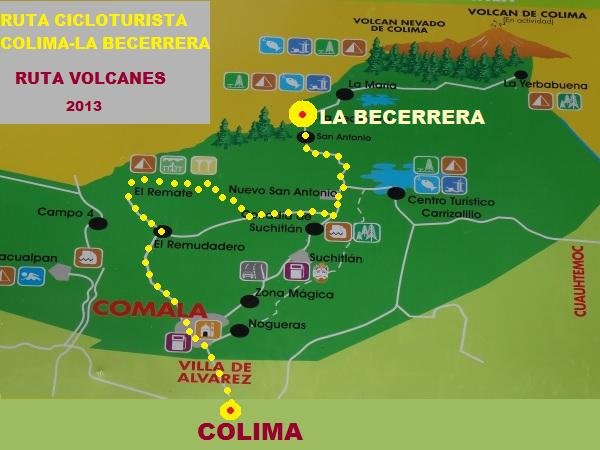

Aquí puedes observar las vistas del Volcán Popocatépetl tomadas en diferentes lugares.
Zona geográfica
Instituciones que observan el comportamiento del volcán
Mitología y Toponimia
Muestra algunos datos reelevantes de este volcán
Cuidar tu Salud y la de tu familia es lo más importante ante cualquier situación. Es por eso que te compartimos algunas recomendaciones que puedes llevar a cabo para protegerte en caso de la caída de ceniza o de una erupción:
Se localiza en el centro de México, en los límites territoriales de los estados de Morelos, Puebla y México.
En el Estado de México colinda con los municipios: Tlamanalco, Amecameca, Atlauta y Ecatzingo.
Con el estado de Morelos colinda específicamente con el municipio de Tetela del Volcán.
Por la parte de Puebla colinda con Huejotzingo, San Salvador el Verde, Domingo Arenas, San Nicolás de los Ranchos y Tochimilco.
Se localiza a unos 72 km al sureste de la Ciudad de México, 43 km de Puebla, 63 km de Cuernavaca, y 53 km de Tlaxcala.
Tiene una forma cónica simétrica y está unido por la parte norte con el Iztaccíhuatl mediante un paso montañoso conocido como Paso de Cortés. El volcán tiene glaciares perennes cerca de la boca del cono, en la punta de la montaña. Es el segundo volcán más alto de México, con una altitud máxima de 5500 metros sobre el nivel del mar y un cráter de 900 m de diámetro y aproximadamente 200 m de profundidad.
Aplicacion Tres, "Volcán Popocatépetl", RRJ
La única manera de percibir y evaluar el estado de actividad y riesgo asociado de un volcán, es a través de la observación y vigilancia sistemática mediante diversos métodos visuales e instrumentales. Si estos se aplican en forma anticipada en las fases previas a un proceso eruptivo, es posible, en la mayoría de los casos, detectar oportunamente un cambio cualitativo y cuantitativo de la actividad que inclusive pudiese conducir a una predicción en el corto plazo de un proceso eruptivo inminente y poner en marcha, de parte de las autoridades de Protección Civil el plan de emergencia previamente establecido. Una muestra de un sistema de vigilancia y monitoreo oportunamente establecido es el del volcán Popocatépetl.
En un esfuerzo conjunto:

Se estableció en los últimos años un complejo sistema de observación telemétrico con una central de adquisición y procesamiento de datos.
Aplicacion Tres, "Volcán Popocatépetl", RRJ
Según la leyenda colonial el Popocatépetl fue un guerrero legendario llamado Popoca que al regresar victorioso del campo de batalla se encuentra con la inesperada muerte de su princesa amada, tras lo cual sube al pináculo del templo con ella en sus brazos y se entregan a sí mismos como ofrendas a los dioses. El nombre náhuatl o prehispánico que recibe el popacatepetl es el xalitlehua.
Aplicacion Tres, "Volcán Popocatépetl", RRJ
El volcán de Fuego se eleva entre 3870 y 3940 msnm, y su altura se encuentra en un constante cambio gracias a la constante actividad que ha presentado durante los últimos años; por eso resulta difícil decir con exactitud cuál es en estos momentos

Es un estratovolcán andesítico que forma parte, junto con el Nevado de Colima (4330 msnm.), de un complejo volcánico situado en el Cinturón Neovolcánico Mexicano y cuyas coordenadas geográficas (19º30'44''N y 103º37'02''W) lo sitúan entre los Estados de Colima (municipios de Comala y Cuauhtémoc) y Jalisco (municipios de Tuxpan, Zapotitlán y Tonila.
Aplicacion Tres, "Volcán Popocatépetl", RRJ
Aplicacion Tres, "Volcán Popocatépetl", RRJ